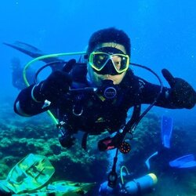

Terry Kuo
iOS Engineer · Nitra
關於 SwiftUI 在生產環境的三年回顧
Three years of SwiftUI in production
為 Apple 開發者準備的兩天，由社群志工策劃。技術分享、深度交流、與一群在乎品質的人。 Two days for Apple-platform developers, organised by volunteers. Talks, conversations, and a room full of people who care about craft.
關於 Apple 平台開發者面對的新一輪轉折，與我們為什麼還要繼續寫 Swift。 The next inflection point for Apple-platform developers, and why we keep writing Swift.
從早期遷移到全面採用，一份來自工程現場的盤點。 From migration to full adoption — an honest field report.
把模型放進使用者的口袋，與隨之而來的工程取捨。 Putting models in your users' pockets, and the trade-offs that follow.
沒有萬靈丹，但有四條被驗證過的路。 No silver bullets — but four well-tested paths.
從 Apple HIG 之外，我們還能學到什麼。 What we can learn beyond Apple's HIG.
iOS Engineer · Nitra
關於 SwiftUI 在生產環境的三年回顧
Three years of SwiftUI in production

Indie Developer
Apple Intelligence 與 On-Device ML
Apple Intelligence & on-device ML

講者徵稿中
CFP open
講者徵稿中
CFP open
講者徵稿中
CFP open
講者徵稿中
CFP open
Web

Producer

CFP Lead
Venue
Sponsors
Design
Marketing
Volunteer